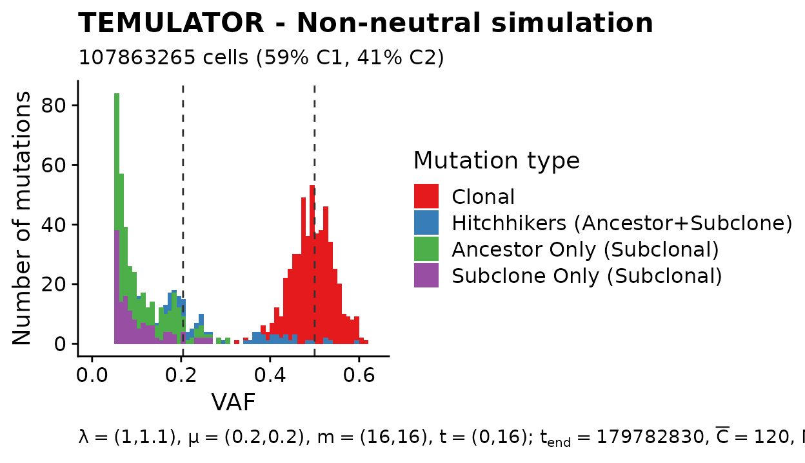
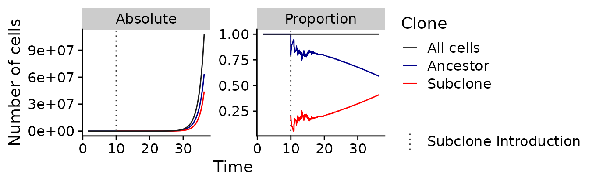
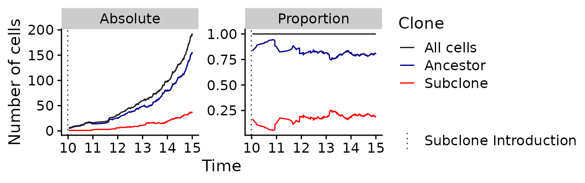
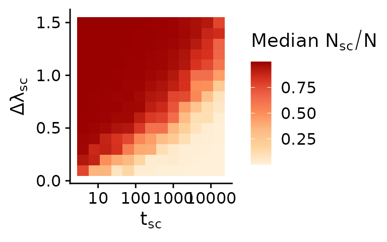
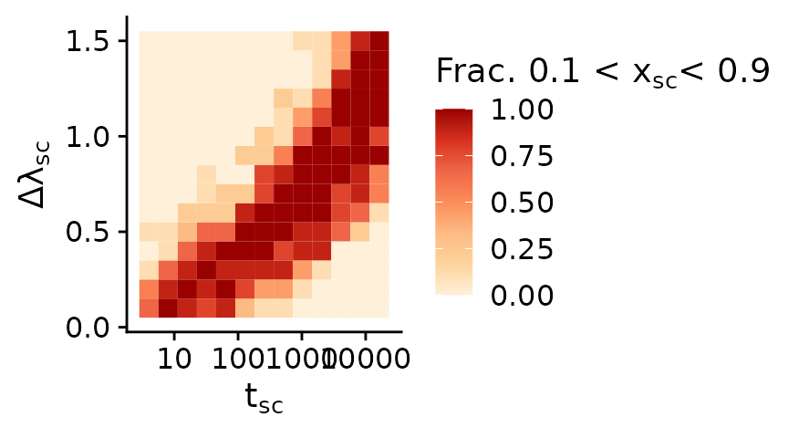
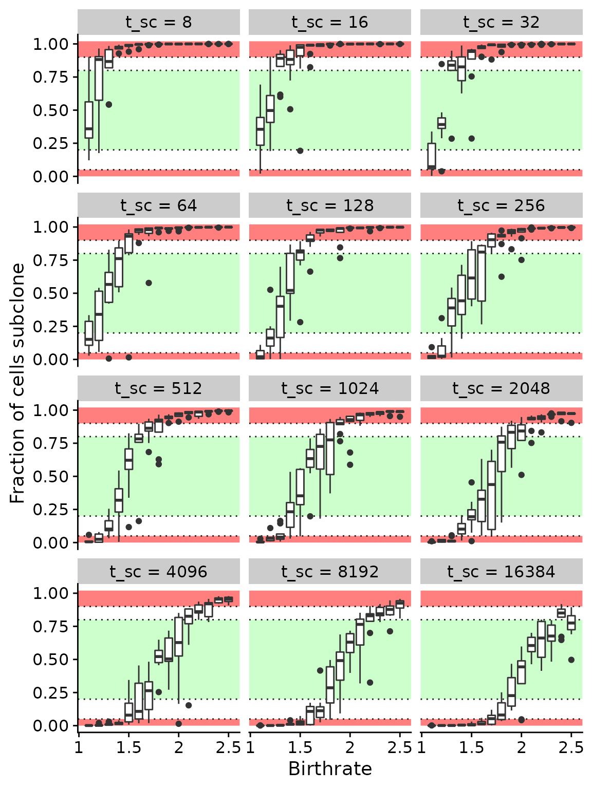
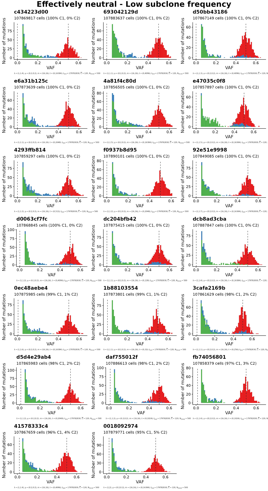
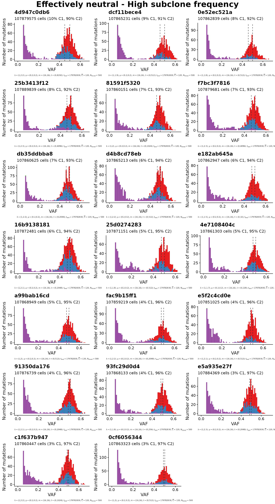

Non spatial MOBSTER simulations
MOBSTER_simulations.Rmd
library(TEMULATOR) # package containing the simulator and datasets
library(ggplot2)
library(cowplot)
theme_set(theme_cowplot())
library(gridExtra)
library(grid)
library(dplyr)Labels
cl_id_names = c(
"0"="Clonal",
"1"="Hitchhikers (Ancestor+Subclone)",
"2"="Ancestor Only (Subclonal)",
"3"="Subclone Only (Subclonal)"
)Functions
generate_timeseries_data = function(d, i) {
clone_params =
d$clone_parameters %>%
dplyr::mutate(mutationrate = mutation_rates) %>%
dplyr::mutate(birthrate = birthrates) %>%
dplyr::mutate(deathrate = deathrates) %>%
dplyr::mutate(start_time = clone_start_times) %>%
dplyr::mutate(father = fathers) %>%
as.matrix()
seed = d$simulation_parameters["seed"]
tend = d$simulation_parameters["simulation_end_time"]
# init simulation and record at differnent time points
sim = new(TEMULATOR_object, clone_params, 0, 0, seed) # construct temulator object
n_reactions = unique(round(c(1:1000, round(2^seq(log2(1001), log2(tend), length = 100)), tend)))
pb = progress::progress_bar$new("[:bar] :percent eta: :eta", tend)
all_results = NULL
for (n in n_reactions) {
pb$update(n/tend)
sim$end_time = n # 1) update the end time
sim$run(FALSE) # 2) run forward, not verbose
result_this_sim = # 3) Observation
data.frame(
reactions = sim$n_reactions,
t = sim$simulation_time,
cells_a = sim$cell_counts[1],
cells_sc = sim$cell_counts[2],
cells = sum(sim$cell_counts)
)
all_results =
rbind(
all_results,
result_this_sim
)
}
return(all_results)
}Generation of the simulations
Below we define all the constant parameters. These are - unlike the seed, subclone birth rate \(\lambda_{sc}\) and time point of mutation \(t_{sc}\) - not varied. The birth rate of the ancestral clone is \(\lambda_a = 1\).
# Simulation parameters:
mutation_rate = 16 # mutation rate per cell doubling (m)
death_rate = 0.2 # death rate (μ)
end_time = 179782830 # number of reactions until the simulation in finished
# Sequencing parameters:
depth_model = 2 # over-dispersed beta-binomial distribution, dispersion parameter ρ=0.0
n_clonal = 500 # number of clonal mutations (N_clonal)
depth = 120 # 120x simulated coverage (C̅)
min_vaf = 0.05 # minimum VAF to accept a variantFor each combination of \(\lambda_sc\) and \(\lambda_sc\) a total of \(9\) simulations were generated. Since calculating these data takes significant time a dataset containing a summary of all simulation (‘mobster_summary_of_simulations’) and a list of S3 objects containing the datasets used in the paper (‘mobster_simulations’) are included in this package.
The first dataset summaries all \(1755\) simulations:
data("mobster_summary_of_simulations", package="TEMULATOR")
colnames(mobster_summary_of_simulations)
#> [1] "subclone_start" "subclone_birthrate"
#> [3] "n" "seed"
#> [5] "n_mutations_before_insertions" "subclone_fraction"
#> [7] "assigned_id"
t_sc = mobster_summary_of_simulations$subclone_start
b_sc = mobster_summary_of_simulations$subclone_birthrate
cat("t_sc: ", unique(t_sc), "\n")
#> t_sc: 4 8 16 32 64 128 256 512 1024 2048 4096 8192 16384
cat("lambda_sc: ", unique(b_sc), "\n")
#> lambda_sc: 1.1 1.2 1.3 1.4 1.5 1.6 1.7 1.8 1.9 2 2.1 2.2 2.3 2.4 2.5
cat("Number of rows:", NROW(mobster_summary_of_simulations), "\n")
#> Number of rows: 1755
stopifnot(all(table(t_sc, b_sc) == 9))The second dataset contains the simulations used in the paper:
data("mobster_simulations", package="TEMULATOR")
cat(length(mobster_simulations))
#> 150
print((mobster_simulations[[1]]))
#> [ TEMULATOR result object ]
#>
#> > Clones:
#>
#> Clone #1:
#> - Birth rate: 1
#> - Death rate: 0.2
#> - Mutation rate: 16
#> => 63774069 cells (59%)
#>
#> Clone #2:
#> - Birth rate: 1.1
#> - Death rate: 0.2
#> - Mutation rate: 16
#> - Start time: 16
#> - Accestor: Clone #0
#> => 44089196 cells (41%)
#>
#>
#> > Other:
#>
#> - Seed: 1521811667
#> -> Gillespie time: NA
#> -> Total reactions: 1521811667
#>
#>
#> > Sequencing data:
#>
#> 1)
#>
#> # Clonal mutations: 500
#> # Purity: 1
#> # Depth: 120
#> # Depth model: overdispersed beta binomial
#> # VAF cutoff: 0.05
#>
#> # A tibble: 961 × 5
#> alt depth vaf id label
#> <int> <int> <dbl> <chr> <chr>
#> 1 7 112 0.0625 4bX0 2
#> 2 6 101 0.0594 4cX0 2
#> 3 7 106 0.0660 40X0 2
#> 4 7 133 0.0526 40X1 2
#> 5 4 53 0.0755 13X0 2
#> 6 11 161 0.0683 13X1 2
#> 7 6 115 0.0522 13X2 2
#> 8 6 119 0.0504 13X3 2
#> 9 6 113 0.0531 13X4 2
#> 10 4 74 0.0541 97X0 2
#> # … with 951 more rows
#>
#> -> Call get_sequencing_data(x, idx=1) to retrieve these.These pre-calculated data are used throughout this vignette, but they could be recreated using the following code:
for (i in seq_len(NROW(mobster_summary_of_simulations))) {
# the current variable parameters:
sc_st = mobster_summary_of_simulations$subclone_start[i]
sc_br = mobster_summary_of_simulations$subclone_birthrate[i]
seed = mobster_summary_of_simulations$seed[i]
simulation_result =
simulateTumour(
birthrates = c(1.0, sc_br),
deathrates = rep(death_rate, 2),
mutation_rates = rep(mutation_rate, 2),
clone_start_times = c(0, sc_st),
fathers = c(0, 0), # CLONAL -> SC1 -> SC2, linear evolution
simulation_end_time = end_time,
seed = seed,
depth_model = depth_model,
min_vaf = min_vaf,
number_clonal_mutations = n_clonal,
verbose=TRUE
)
# Check that the fraction of subclone cells are equal:
x_sc = as.numeric(get_clone_frequency(simulation_result)["clone_2"])
stopifnot(all.equal(mobster_summary_of_simulations$subclone_fraction[i], x_sc))
# Check that the included dataset is identical:
id = mobster_summary_of_simulations$assigned_id[i]
if (!is.na(id)) { # one of the 150 selected simulations
make_comparable = function(d) {
# drops two ids that can differ in the objects
validate_temulator_result_object(d)
d$mutation_data$id = NULL
d$mutation_data$clone = NULL
return(d)
}
included_data = make_comparable(mobster_simulations[[id]])
calculated_data = make_comparable(simulation_result)
stopifnot(all.equal(included_data, calculated_data))
}
}Details on the simulated dynamics
Example of a simulated sequencing dataset
Let us now look at one of these examples first. In the following plot a representative example of a simulated sequencing dataset is shown. Here the single subclone (i.e., the second clone C2) with a selective advantage of \(10\%\) (i.e., \(\lambda_{sc}=1.1\)) was introduced at a population size of \(t_{sc} = 16\). This was done by updating one cell of \(C1\) with the new phenotype \(C2\). The number the descendants of this single subclone reached is larger that of all other cells existing at \(t_{sc} = 16\). This in turn means that the fraction of cells \(x_{C2}\) with the phenotype of the subclone \(C2\) compared to the fraction of cells \(x_{C1}\) with the ancestral phenotype \(C1\) is comparatively large (i.e., \(x_{C1}=59\%\) and \(x_{C2}=41\%\)).
plot(mobster_simulations[[1]], quite = TRUE) +
labs(fill="Mutation type") +
scale_fill_brewer(
palette = "Set1",
limits = names(cl_id_names),
breaks = names(cl_id_names),
labels = cl_id_names,
drop = FALSE
)
#> Scale for 'fill' is already present. Adding another scale for 'fill', which
#> will replace the existing scale.
#> Warning: Removed 148 rows containing missing values (geom_bar).
Four important structures or groups of cluster are highlighted in the VAF spectrum. The first one is the clonal cluster (shown in red). These are mutations that were assumed to be present in the first cell of the ancestral clone \(C1\), meaning that these are present in virtually all cells of the tumour. Since we simulated a pure and diploid tumour, this cluster is visible at a VAF of 50%.
The second highlighted structure is a relatively small group of mutations (shown in blue) that are present in both, some cells of the ancestral clone and all cells of the subclone. These mutations move within the cells of the subclone to a higher frequency and are hence called ‘hitchhiker mutations’. It is worthwhile to note that these mutations are present at different true frequencies in the population. This frequency depends on when these arose during the expansion of the ancestral clone.
The third and four highlighted structure are mutations that are only present in the selected subclone (shown in purple) and the ancestral clone (shown in green) respectively. The both form a subclonal power-law tail on their own.
Temporal dynamics of the clones
As already described only two clones coexist in the simulated datasets. Since the cells of the subclone have a selective advantage over the cells of the ancestral clone, these eventually reach a comparatively large size. These dynamics can be clearly seen if the cell in the tumour are tracked over time. Such time series data can be generated with the ‘generate_timeseries_data’ function defined above using the following command:
time_series_data_example = generate_timeseries_data(mobster_simulations[[1]])As this might take a while a precalculated dataset is also included in the package. This can be loaded as shown in the following.
data("time_series_data_example", package="TEMULATOR")
print(head(time_series_data_example))
#> reactions t cells_a cells_sc cells
#> 1 1 1.605989 2 NA 2
#> 2 2 2.942172 1 NA 1
#> 3 3 5.430909 2 NA 2
#> 4 4 5.637229 3 NA 3
#> 5 5 6.210463 4 NA 4
#> 6 6 6.283427 5 NA 5As seen above the dataset contains various variables. These are the total number of reactions reactions (i.e., birth & death), the Gillespie time t, the number of cells in the population cells, the number of ancestral cells cells_a, and the number of cells of the subclone cells_sc. Together these data show how the number of cells for each of the two subclones change over time.
Let’s now look at this. The following plot shows how the absolute number (left panel) and the proportion (right panel) of the two cell types change over time.
pl =
time_series_data_example %>%
dplyr::mutate(n=cells) %>%
reshape2::melt(id.vars=c("reactions", "t", "n")) %>%
dplyr::select(reactions, t, n, clone=variable, Absolute=value) %>%
dplyr::mutate(Proportion=Absolute/n) %>%
reshape2::melt(id.vars=c("reactions", "t", "n", "clone")) %>%
ggplot(aes(x = t, y = value, color = clone)) +
geom_line() +
geom_vline(
aes(
linetype="Subclone Introduction",
xintercept = with(time_series_data_example, t[reactions == 16])
),
color="gray20"
) +
facet_wrap(
.~variable,
scale="free_y"
) +
xlab("Time") +
ylab("Number of cells") +
labs(color = "Clone", linetype="") +
scale_color_manual(
breaks = c("cells", "cells_a", "cells_sc"),
labels = c("All cells", "Ancestor", "Subclone"),
values = c("gray10", "darkblue", "red")
) +
scale_linetype_manual(
breaks = "Subclone Introduction",
values = 3
)
plot(pl)
#> Warning: Removed 15 row(s) containing missing values (geom_path).
It can clearly be seen that both clones, ignoring random drift, grow exponentially over time. Since the subclone (shown in red) growths somewhat faster than the ancestral clone (shown in blue), the proportions of cell types change over time, until the subclone reaches the previously mentioned proportion of 41% at the end of the simulation. Another notable aspect is that the relative proportion of both cell types vary considerably while the population size of the subclone is small (i.e., from a time of \(t\approx 10\) to \(t\approx 15\)). This results from the stronger influence of random drift while the population size is small. The following plot shows a smaller window of time and allows to see these dynamics better.

Relationship between \(x_{sc}\), \(t_{sc}\) and \(\lambda_{sc}\):
In the end the resulting average proportion of cells are a function of both \(\lambda_{sc}\) and \(t_{sc}\). This relationship summarised in the following plot which shows the average proportion of the subclone in all simulations.
mobster_summary_of_simulations %>%
dplyr::group_by(subclone_start, subclone_birthrate) %>%
dplyr::summarise(mean_sc_frac=median(subclone_fraction)) %>%
ggplot(aes(x=subclone_start, y=subclone_birthrate-1, fill=mean_sc_frac)) +
geom_tile() +
scale_x_log10() +
scale_fill_distiller(palette = 8, direction = 1) +
xlab(bquote(t[sc])) +
ylab(bquote(Delta*lambda[sc])) +
labs(fill=bquote("Median"~N[sc]/N))
In the top left corner of the plot the subclones swept effectively through the population and makes up the majority of cells. In the bottom right corner the subclone did not have sufficient time (yet) to sweep to a high frequency and thus makes up only a small minority of cells. In both of these cases random sampling would rarely sample cells of the ancestral clone and sublone respectively. Likewise, subclonal mutations of the ancestral population or respectively the subclone would not show up in bulk WGS data, since they are below the limit of detection of commonly conducted sequencing experiments. In both cases the observed VAF spectrum would be ‘effectively neutral’. The fraction of simulations in which this is the case — i.e., where the ancestor or the subclone make up less than 5% of the population — are shown in the plot below.
mobster_summary_of_simulations %>%
dplyr::group_by(subclone_start, subclone_birthrate) %>%
dplyr::summarise(frac_coexist=mean(between(subclone_fraction, 0.05, 0.95))) %>%
ggplot(aes(x=subclone_start, y=subclone_birthrate-1, fill=frac_coexist)) +
geom_tile() +
scale_x_log10() +
scale_fill_distiller(palette = 8, direction = 1) +
xlab(bquote(t[sc])) +
ylab(bquote(Delta*lambda[sc])) +
labs(fill=bquote("Frac. 0.1 < "*x[sc]*"< 0.9"))
Selection of suitable simulations
The plot below shows the fraction of all cells that subclone made up. For a given insertion time the subclone can either not grow to a significant size (e.g. \(\lambda_{sc} < 1.5\) and \(t_{sc} = 2048\)) or grow so fast that it dominates the whole population (e.g. \(\lambda_{sc} > 2\) and \(t_{sc} = 2048\)). In neither of these two cases a subclonal cluster would be detectable in the site frequency spectrum at a medium sequencing depth of \(C \approx 120\) (see figures below). Simulations where the subclone is at a very high or low frequency (red areas) are effectively neutral and from each \(20\) simulations were choosen at random
In order to create a reasonable tests with a detactable cluster in the site frequency spectrum \(110\) simulations where drawn from those where the subclone made up a fraction of \(0.2\)–\(0.8\) of all cells (green area in the plot blow).
poly_a = data.frame(x=c(-Inf,-Inf,Inf,Inf,-Inf), y=c(1.02,0.9,0.9,1.02,1.02))
poly_b = data.frame(x=c(-Inf,-Inf,Inf,Inf,-Inf), y=c(0.8,0.2,0.2,0.8,0.8))
poly_c = data.frame(x=c(-Inf,-Inf,Inf,Inf,-Inf), y=c(0.05,0,0,0.05,0.05))
mobster_summary_of_simulations %>%
filter(subclone_start>4) %>%
mutate(subclone_start=factor(subclone_start, sort(unique(subclone_start)), ordered=1)) %>%
mutate(subclone_birthrate_f=factor(subclone_birthrate, ordered=1)) %>%
ggplot(aes(x=subclone_birthrate, y=subclone_fraction, group=subclone_birthrate_f)) +
geom_polygon(data=poly_a, aes(x=x, y=y), inherit.aes = FALSE, fill="red", alpha=0.5) +
geom_polygon(data=poly_b, aes(x=x, y=y), inherit.aes = FALSE, fill="green", alpha=0.2) +
geom_polygon(data=poly_c, aes(x=x, y=y), inherit.aes = FALSE, fill="red", alpha=0.5) +
geom_hline(yintercept = c(0.05, 0.2, 0.8, 0.9), linetype=3, color="gray10") +
geom_boxplot() +
scale_x_continuous(breaks=c(1,1.5,2,2.5), labels=c("1",1.5,2, 2.5)) +
facet_wrap(~subclone_start, labeller = as_labeller(function(x) paste0("t_sc = ", x)), ncol=3) +
xlab("Birthrate") +
ylab("Fraction of cells subclone")
mobster_summary_of_simulations$group =
case_when(mobster_summary_of_simulations$subclone_fraction < 0.05 ~ "neutral_low_frac",
mobster_summary_of_simulations$subclone_fraction > 0.9 ~ "neutral_high_frac",
between(mobster_summary_of_simulations$subclone_fraction, 0.2, 0.8) ~ "detectable")
mobster_summary_of_simulations_subset =
mobster_summary_of_simulations %>%
filter(n_mutations_before_insertions >= 50) %>%
filter(!is.na(group)) %>%
filter(!is.na(assigned_id)) %>%
arrange(subclone_fraction)
ids_per_group =
split(mobster_summary_of_simulations_subset$assigned_id,
mobster_summary_of_simulations_subset$group)
sapply(ids_per_group, length)
#> detectable neutral_high_frac neutral_low_frac
#> 110 20 20Plots group 1: Neutral with low subclone fraction
plot_grid = function(object_list, title) {
add_subclone_placeholder = function(x) {
# add a fake mutation of each subclone to the data
# this is done to ensure that labels of them show
# up with the same names in the generated plots
place_holder=data.frame(clone=c(1, 2), alt=0, depth=Inf, id="100X0")
x$mutation_data=rbind(x$mutation_data, place_holder)
return(x)
}
plots = object_list %>%
lapply(add_subclone_placeholder) %>%
lapply(plot, quite=TRUE)
for (i in seq_along(plots)) {
plots[[i]] =
plots[[i]] +
labs(title = substr(ids_per_group[[set]][i], 1, 10)) +
theme(plot.caption = element_text(hjust = 0, size = 6)) +
guides(fill = FALSE) +
scale_fill_brewer(
palette = "Set1",
breaks = names(cl_id_names),
labels = cl_id_names,
drop = FALSE
)
}
top = textGrob(title, gp=gpar(fontsize=25, fontface="bold"))
grid.arrange(grobs=plots, top=top, ncol=3)
}
set = "neutral_low_frac"
title = "Effectively neutral - Low subclone frequency"
plot_grid(mobster_simulations[ids_per_group[[set]]], title)
Plots group 2: Neutral with high subclone fraction
set = "neutral_high_frac"
title = "Effectively neutral - High subclone frequency"
plot_grid(mobster_simulations[ids_per_group[[set]]], title)
Plots group 3: Non-neutral with potentially detectable subclone
set = "detectable"
title = "Potentially detectable subclone"
plot_grid(mobster_simulations[ids_per_group[[set]]], title)